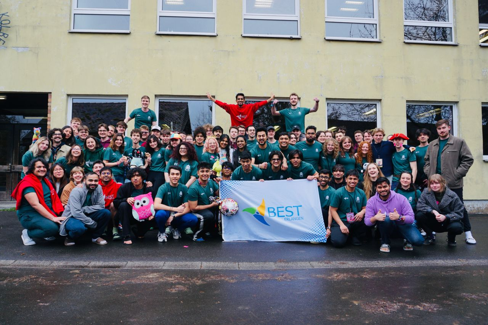
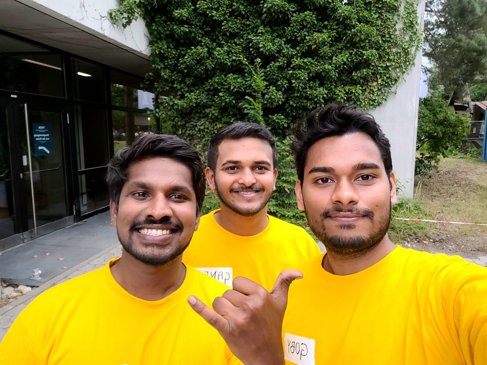

Community.
Volunteering and community involvement alongside my engineering career.

Funds Responsible (Core Team), Spring Regional Meeting (sRM) 2026
Full member of BEST Erlangen e.V., working on the Corporate Relations side of the group, an area I hadn't worked in before. Took on the role of Funds Responsible on the Core Team for the Spring Regional Meeting (sRM) 2026, a training event that brings around 100 engineering students from across Europe together to build skills in leadership, strategic management, and organizational agility.
The role involves finding and securing partnerships with organizations that support the event, and building relationships that connect the student side of BEST with the professional side. Secured partnerships with six organizations to help make the event possible.
EELISA × evosoft Summer School, Product Prototyping and Design, Budapest
Reporter for the EELISA European University at the evosoft Summer School on Product Prototyping and Design in Budapest, a multi day programme covering the full journey from idea to product, including user centred design, agile methods, and prototyping tools.
The programme ran through interactive sessions, team activities, and talks from industry experts, hosted by evosoft and organized by EELISA, with mentors, speakers, and coordinators running the sessions alongside the reporting work.


Sommerfest Volunteer
Volunteered at BEST Erlangen's annual Sommerfest, helping put together the group's summer get together for members, alumni, and the partner companies that support our programmes throughout the year.
The day is equal parts logistics and hosting, setting up the venue, coordinating food and activities, and making sure guests from both the student and corporate side feel looked after. It's a smaller, more informal event than the big regional meetings like sRM, but it's just as important for keeping the BEST Erlangen community close and connected.
Ask a Student Advisor
Peer advisor for prospective and incoming international students at FAU, sharing first hand experience on settling into Erlangen, from enrolment and housing to navigating the cultural and administrative differences that trip up new arrivals.
Most conversations start with practical questions, things like Anmeldung, blocked accounts, and finding a room, but they usually turn into something closer to mentoring, covering what courses to expect, how the German academic system actually works day to day, and how to build a life here rather than just survive the paperwork.


Robotics Club, Secretary
Served as Secretary of the Robotics Club at Sathyabama Institute of Science and Technology, leading club meetings, organizing inter college competitions, and delivering technical talks, and representing the club at events across other campuses.
Built hands on expertise in Arduino, Raspberry Pi, C, C++, LabVIEW, and Java alongside fellow club members, and helped pair newer members with more experienced ones along the way.
Class Representative, Student Union
Represented the class in student union assemblies at Sathyabama Institute, acting as the main point of contact between peers and faculty for four years.
The role meant a lot of unglamorous groundwork, chasing down scheduling conflicts, relaying feedback on courses and exams, and coordinating academic events, but it taught me how much smoother things run when someone is actually listening on both sides.

Unacademy "Believe" Marketing Campaign
Campus ambassador for Viral Fission's on-ground activation of Unacademy's "Believe" campaign, part of Viral Fission's broader network connecting Indian students with the brands they use every day.
The role was equal parts marketing and community building, running campus events, driving sign-ups and engagement through social promotion, and acting as the on-ground face of the campaign for students who would otherwise only see it online.


Deloitte Impact Every Day
Took part in Deloitte India's Impact Day, the firm's year round community volunteering initiative that puts thousands of employees' skills to work outside the office.
In a typical year, the India programme alone brings out over 55,000 volunteers across 500+ locations, running skills based volunteering and community projects that reach hundreds of thousands of people, trading laptops and calls for a day of hands on work with local not for profits.
Hult Prize Campus Organizer
Organized the 2020 campus round of the Hult Prize, the global student competition that channels early stage social entrepreneurship into a path toward a $1M prize.
As Campus Director, the job was building the pipeline from scratch, recruiting an organizing committee, judges, and competing teams, promoting the challenge across campus, and running the training and pitch events that took student ideas from a first draft toward the national round.